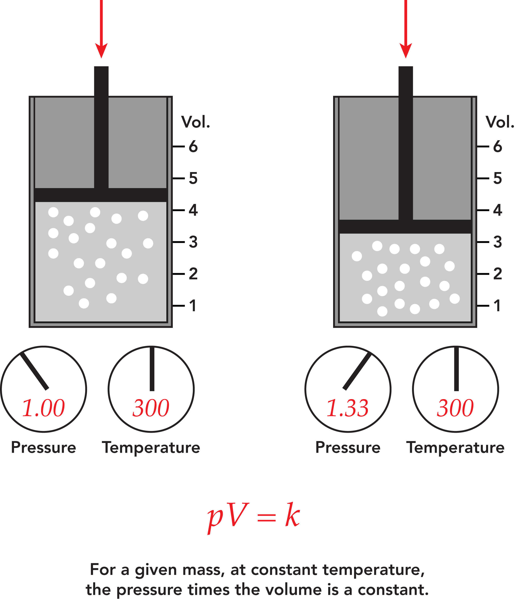

Boyle's Law
History and Background -
It was discovered in 1662 by Robert Boyle, a famous English chemist that if gas is pushed, the volume would decrease proportionately.
Definition and Description -
It is gas law which states that the pressure exerted by a gas (of a given mass, kept at a constant temperature) is inversely proportional to the volume occupied by it. In simpler terms, when volume goes up temperature goes down and vice versa when temperature remains constant.Formula:

Example Problem:
A gas has a volume of 6.0 L when the pressure is 0.8 atm. The gas is compressed to a volume of 4.0 L. What is the new pressure of the gas, assuming the temperature remains constant?
GIVEN:
Initial volume (V1V_1V1) = 6.0 L
Initial pressure (P1P_1P1) = 0.8 atm
Final volume (V2V_2V2) = 4.0 L
Final pressure (P2P_2P2) = ?
SOLUTION:
1. P2=V2P1V1
2. P2=4.0L(0.8atm)(6.0L)
3. P2=4.0L4.8atm⋅L=1.2atm
FINAL ANSWER: The new pressure of the gas is 1.2 atm.